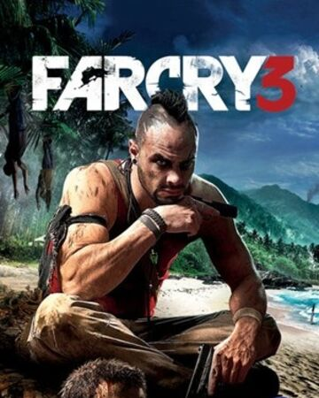

Far Cry 3 |
||
|---|---|---|
|  | Sinopsis: El juego comienza con una cinemática mostrando al protagonista Jason Brody de vacaciones con sus amigos en Bangkok, donde deciden hacer un viaje de paracaidismo. El grupo aterriza en una isla infestada de piratas y son hechos prisioneros por su líder, Vaas Montenegro. |
Desarrollador:Ubisoft Montreal Plataformas: PlayStation 3,PlayStation 4,Xbox 360,Xbox One,Microsoft Windows Año: 2012 Duracion:30 horas aprox Pais:Canada |
Criticas Profesionales:Alvaro CastellanoLa serie Far Cry vuelve a cautivarnos con otro gran shooter, y es que Ubisoft nos brinda un paraíso convertido en infierno realmente memorable. Tiene sus pequeños fallos, entre ellos una IA discreta, pero hay tantas cosas buenas que cuesta mucho no hablar de un producto plenamente recomendable. Montones de cosas que hacer, contenidos abundantes y de muy diferente corte, y diversión máxima con enorme libertad y personalidad para uno de los grandes lanzamientos de este año. |
Trailer |
Obtener:AlquilarComprar |
Registrate/Iniciar Sesion